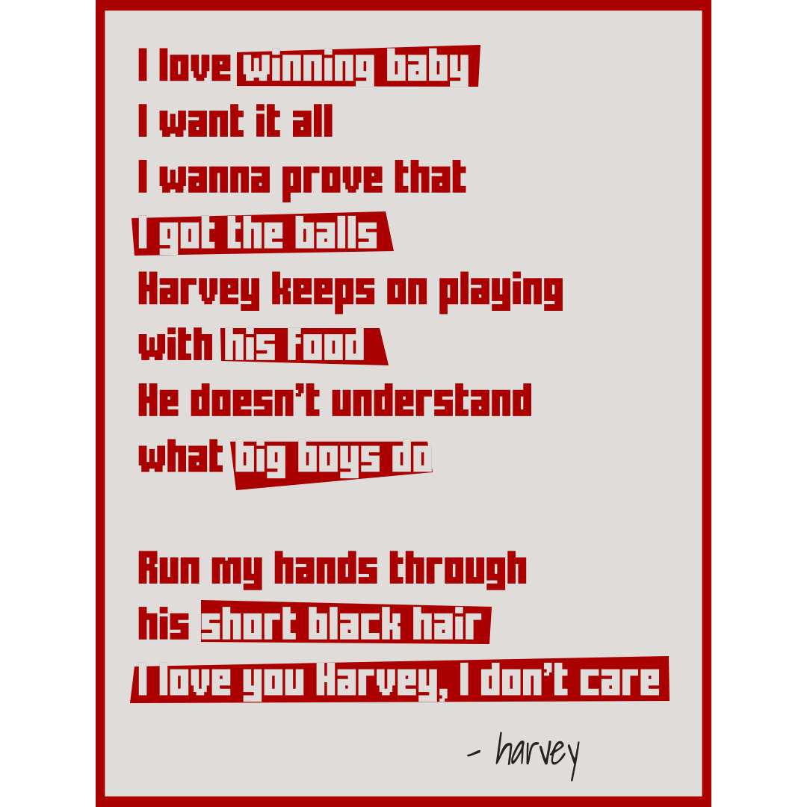

Dave had a somewhat unconventional way getting into the major league. he got drafted by the jays as a pitcher despite of his very little experience with the position. nevertheless, it was one of those times when the scout hit it just right. although the jays weren't the best, for being new and all, Dave was the best among the pitching staff. He was also known to be "expressive" on the mound. when things didn't go his way, he'll show it. this gave him a certain image with a lot of sportswriter at the time. and despite having a good performance throughout, he never won the CY young award.
Dave shown a lot of good improvement within himself in the coming year. a young kid with a family coming off hot in the major league, he learnt what it is to lose. over and over again. he became the only pitcher to date to have ever thrown a no hitter in the blue jays history. that after failing 4 times of just one out away in the span of 5 years.